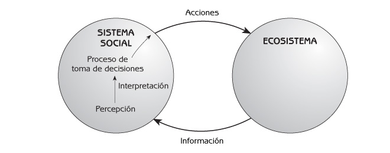
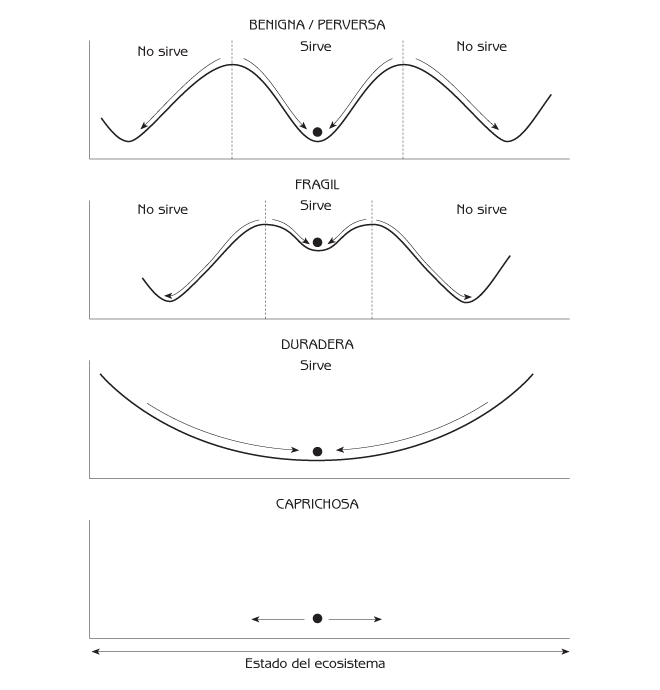

Ecología Humana
Conceptos Básicos para el Desarrollo Sustentable
Autor: Gerald G. Marten
Editorial: Earthscan Publications
Fecha de publicación: November 2001, 256 pp.
Edición en rústica: 1853837148
Edición en pasta dura: 185383713X
← Consulte el índice completo del libro.
Capítulo 9 Percepciones de la Naturaleza
- Percepciones Comunes de la Naturaleza
- Actitudes de las Religiones ante la Naturaleza
- Notas Precautorias Acerca de la Romantización de la Naturaleza y los Sistemas Sociales Tradicionales
- Puntos de Reflexión
Las personas dan sentido a la complejidad que les rodea llevando en sus mentes cientos de imágenes e ‘historias’ acerca de sí mismas, su sociedad y su medio ambiente biofísico – cómo está estructurado cada uno de ellos, cómo funcionan y cómo se interrelacionan. Cada imagen o historia encapsula una porción de su realidad de manera simplificada. Juntas, las imágenes e historias constituyen la cosmovisión de una persona – su percepción de sí mismo y el mundo que le rodea. Las imágenes e historias compartidas forman la cosmovisión de una sociedad. Las personas y las sociedades utilizan su cosmovisión para interpretar información y formular acciones.
Las imágenes e historias que las sociedades tienen acerca de los ecosistemas son la base de su percepción de la naturaleza, que juega un papel central en la conformación de las interacciones entre el sistema social y el ecosistema. (El concepto de ‘naturaleza’ en este capítulo se refiere a la totalidad del mundo biofísico, incluyendo los ecosistemas agrícolas y urbanos, además de los naturales). Las percepciones dan forma a la interpretación de la información cuando ésta ingresa a un sistema social desde un ecosistema, y las percepciones dan forma a los procesos de toma de decisiones que conducen a acciones que afectan a los ecosistemas (ver Figura 9.1). Las distintas culturas – y diferentes individuos dentro de la misma cultura – tienen percepciones distintas acerca de cómo funcionan los ecosistemas y cómo responden a las acciones humanas. Mientras que toda percepción se basa en la realidad, algunas percepciones de la naturaleza resultan más útiles porque abarcan la realidad de manera más completa o precisa. Reconocer las distintas percepciones puede ayudar a entender porqué individuos distintos y sociedades diferentes interactúan con el medio ambiente de maneras tan distintas que resultan impactantes.

Figura 9.1 El papel de la percepción de la naturaleza en la toma de decisiones que afectan a ecosistemas.
Este capítulo describe cinco percepciones comunes de la naturaleza. Las dos primeras – ‘todo está conectado con todo’ y ‘benigna/perversa’ – son conceptos fundamentales en la ecología humana, pero no se encuentran limitadas a los científicos. Las otras tres percepciones de la naturaleza – ‘frágil’, ‘durable’ y ‘caprichosa’ – son casos especiales de la perspectiva ‘benigna/perversa’. Cada una de estas tres perspectivas representa una porción válida de la realidad. Sin embargo, cada una es menos completa que la de ‘benigna/perversa’ en formas que pueden hacer que las personas interactúen con los ecosistemas sin tomar totalmente en consideración las formas en que los ecosistemas responderán ante sus acciones.
La religión es una manera poderosa con que cuentan las sociedades para organizar sus cosmovisiones y dar forma a la conducta humana. Las sociedades de cazadores-recolectores veían la naturaleza con reverencia y respeto. Sus religiones animistas consideraban que las personas eran una parte integral de la naturaleza, básicamente iguales al resto de los animales. La religión cambió con las revoluciones Agrícola e Industrial. Las religiones occidentales consideraron que el ser humano tenía un carácter único que le dotaba de autoridad sobre la naturaleza, además de hacerle responsable de su integridad. La reverencia hacia la naturaleza disminuyó en la medida en que las sociedades occidentales alcanzaron un mayor dominio, y la responsabilidad cedió su lugar a la explotación. El respeto por la naturaleza renació con la aparición de los problemas ambientales durante los años recientes.
Percepciones Comunes de la Naturaleza
En la naturaleza todo se encuentra conectado con todo
Los miembros de las sociedades tradicionales enfatizan el hecho de que en la naturaleza todo se encuentra conectado con todo. Creen que muchos eventos son consecuencia directa o indirecta de las actividades humanas, pero se encuentran más allá del entendimiento humano. Tratar a la naturaleza con un respeto cuidadoso para evitar consecuencias adversas es parte de su cultura. Esta percepción de la naturaleza es similar al concepto de la ecología humana de que las acciones del hombre generan cadenas de efectos que reverberan por los ecosistemas y los sistemas sociales. La principal diferencia entre la ecología humana y la percepción tradicional de que todo está interconectado radica en que las sociedades tradicionales no ponen atención en los detalles de las conexiones. Los ecólogos humanos son lo más explícito posible acerca de estos detalles, de modo que las personas puedan entender mejor y predecir las consecuencias de sus actos.
La naturaleza es benigna y perversa (el principio ‘funcional/no funcional’)
Benigna significa que es ‘bondadosa’, o ‘que genera bienestar’. Perversa significa lo contrario. Esta percepción de la naturaleza establece que la naturaleza es benigna (esto es, que proporciona los servicios que deseamos) en tanto que la gente no modifique radicalmente los ecosistemas a partir de su condición natural (Figura 9.2). En otras palabras, el ecosistema nos sirve. No obstante, la naturaleza puede ser perversa (esto es, no proporcionar los servicios que necesitamos) si la gente modifica el estado de los ecosistemas a tal grado que resulten incapaces de funcionar adecuadamente. El ecosistema cambia a una forma que no proporciona los servicios tan bien como antes. En otras palabras, el ecosistema no nos sirve. Este percepción de la naturaleza es la misma que la de un interruptor que cambia de “funcional” a “no funcional” debido a la sucesión inducida por el hombre (véase el Capítulo 6). El amplio espectro de la perspectiva benigna/perversa y su confirmación por la observación científica hacen que resulte particularmente relevante para la ecología humana.
Las siguientes tres perspectivas son casos especiales comunes de la perspectiva benigna/perversa. Cada una de ellas está incompleta porque enfatiza solamente un aspecto de la realidad más amplia captada por la de benigna/perversa.
La naturaleza es frágil
Este punto de vista considera que la naturaleza tiene un delicado balance que se vendrá abajo si el ser humano modifica las condiciones naturales de los ecosistemas. Enfatiza el elemento ‘no funcional’ de la respuesta ‘funcional/no funcional’ de los ecosistemas ante las acciones humanas. Esta perspectiva sostiene que aún las desviaciones pequeñas de las condiciones naturales pueden llevar a consecuencias desastrosas e irreversibles para los ecosistemas. Cambiar el estado del ecosistema, así sea un poco, puede conducirlo a otro dominio de estabilidad (ver Figura 9.2). Por supuesto, ‘frágil’ no implica que el ecosistema desaparezca. Todo lugar tiene y tendrá siempre un ecosistema. Frágil significa que es fácil cambiar de un tipo de comunidad biológica a otro.

Figura 9.2 Diagramas de dominios de estabilidad según distintas percepciones de la naturaleza.
La naturaleza es duradera
Esta percepción de la naturaleza es opuesta al punto de vista que la juzga ‘frágil’. Ha sido una parte común de la cosmovisión de la sociedad occidental desde la Revolución Industrial. Se centra en el elemento ‘funcional’ de la respuesta ‘funcional/no funcional’ de los ecosistemas ante las acciones humanas (Figura 9.2). Este punto de vista sostiene que las personas pueden utilizar y moldear la naturaleza como deseen. La naturaleza puede satisfacer cualquier demanda que se le haga, en tanto la gente utilice la ciencia y tecnología adecuadas para extraer de la naturaleza los beneficios que ofrece. Si las actividades humanas dañan los ecosistemas, la ciencia, la tecnología y otros insumos de origen humano pueden reparar el daño o proporcionar alternativas viables a los procesos naturales de los ecosistemas. No importa que le hagan las personas a los ecosistemas, habrá fuerzas naturales y sociales que eviten que los ecosistemas se dañen tan severamente que se colapsen. Las personas que tienen esta visión de la naturaleza pueden creer que la oferta y demanda económicas protegen a los ecosistemas de la sobreexplotación (véase el Capítulo 8).
La naturaleza es caprichosa
Caprichosa significa ‘impredecible’. Esta perspectiva enfatiza el elemento aleatorio en los ecosistemas. Muchas personas, como los campesinos y los pescadores, que dependen directamente de la naturaleza para vivir, la experimentan como extremadamente variable e impredecible. Durante algunos años el clima es propicio para las cosechas; pero en otros es duro y daña los cultivos. Los perjuicios ocasionados por insectos son severos en un año pero no lo son en otros. Durante algunos años hay una abundante disponibilidad de peces; pero en otros no. Quienes ven la naturaleza como caprichosa no comprenden por qué algunas veces es benigna y otras perversa. Debido a que los impactos de sus actividades pueden extenderse a través de largas e imperceptibles cadenas de efectos por el ecosistema, ven pocas relaciones entre lo que hacen y los resultados inevitables. Esta percepción de la naturaleza supone que no hay fuerzas naturales poderosas que mantengan los ecosistemas en un estado determinado. El estado del ecosistema (el círculo de la Figura 9.2) es simplemente empujado por el ‘destino’ de un lado a otro en la medida en que la naturaleza actúa al azar.
Actitudes de las Religiones ante la Naturaleza
La religión es una forma en que las sociedades utilizan el saber acumulado durante generaciones para organizar sus valores, percepciones y conductas. Puede jugar un papel central en la percepción de una sociedad de la relación que tienen los individuos entre sí y con la naturaleza. Las religiones aportan un sentido de reverencia y respeto por las cosas más grandes que nosotros. Las creencias religiosas son una fuente de significado; nos dicen qué es importante en nuestra vida. Las religiones ofrecen códigos morales – lineamientos acerca del bien y el mal y reglas de conducta – que resultan particularmente efectivos porque se encuentran reforzados por creencias emocionalmente atractivas, símbolos y rituales. La importancia de estos códigos morales para la interacción de los hombres con el medio ambiente radica en el balance que promuevan, no solamente entre los deseos de cada individuo y las necesidades de los demás, sino también entre los deseos a corto plazo y las consideraciones a largo plazo, como la preocupación por las generaciones futuras.
Religiones diferentes pueden tener percepciones significativamente distintas acerca de las relaciones de los seres humanos con la naturaleza y códigos morales significativamente diferentes para conducir la relación de los seres humanos con el medio ambiente. Las siguientes descripciones exploran las actitudes de importantes religiones ante la naturaleza, sin pretender una explicación completa de cada religión. Mientras que resulta difícil generalizar acerca de las religiones porque son complejas, diversas y altamente variables en el tiempo, las comparaciones pueden ilustrar como las personas y las culturas tienen distintas percepciones acerca del medio ambiente.
Religiones del espíritu (animismo)
Antes del desarrollo de la ciencia moderna, las personas explicaban la naturaleza a través de la presencia de espíritus. Los espíritus son seres invisibles que ejercen poder sobre el clima, las enfermedades y otros fenómenos naturales significativos para el ser humano. Los espíritus se diferencian de la ciencia moderna porque tienen personalidades parecidas a las de los hombres, mientras que las explicaciones científicas de los fenómenos naturales son objetivas y técnicas. No obstante, las explicaciones científicas son sorprendentemente parecidas de muchas maneras a los espíritus. Mientras que la ciencia ha hecho que el funcionamiento de la naturaleza resulte más ‘visible’ (por ejemplo, las bacterias y virus causantes de enfermedades, y el papel del ADN en la genética y en la producción de proteínas en el organismo), muchos de los conceptos de la ciencia moderna son todavía tan invisibles como los espíritus. Los conceptos teóricos invisibles, como el campo de gravedad, el campo electromagnético y las partículas subatómicas, tienen asombrosos poderes de predicción; pero los científicos no saben lo que son realmente, o porqué funcionan cómo lo hacen.
Originalmente, los espíritus eran una parte importante de todas las religiones. La creencia en los espíritus continuó siendo común en todas las sociedades, sin importar su religión, hasta que fueron substituidos por la ciencia moderna. Las religiones de muchas sociedades tribales todavía se encuentran basadas en los espíritus, y las religiones espiritistas (como la Shinto, de Japón) todavía son importantes en algunas sociedades modernas.
Algunos espíritus son las almas de los ancestros muertos, que permanecen en los hogares de sus descendientes. Otros son dioses responsables de diversos elementos de la naturaleza. Los espíritus generalmente habitan los cuerpos de plantas, animales y estructuras geográficas conspicuas como grandes peñascos, colinas, montañas o lagos. Muchas religiones espiritistas cuentan con dos espíritus especialmente poderosos: el Creador del Universo (que también puede ser nombrado Gran Espíritu, Gran Misterio, o Dador de Vida) y el Espíritu que Controla la Tierra (también llamado Madre Tierra). Cualquier planta, animal o lugar habitado por un espíritu es sagrado y merecedor de gran reverencia y respeto. Frecuentemente se consideran sagrados lugares específicos porque fueron parte de la historia mitológica. Es común que quienes creen en espíritus tengan arboledas sagradas, tales como ecosistemas naturales de bosque que a nadie se permite perturbar. Las arboledas sagradas cumplen con el propósito práctico de mantener los ecosistemas naturales y la diversidad de especies en paisajes que, de otra manera, la gente ha modificado para formar ecosistemas agrícolas o urbanos.
Los espíritus son más que explicaciones primitivas de los fenómenos naturales. Funcionan como contactos para que las personas mantengan relaciones armoniosas con la naturaleza. Son como ‘señores’ invisibles que tienen el poder de ayudar a la gente; pero si se les disgusta, también pueden dañarla. Para quienes creen en espíritus es importante respetarlos y mantenerlos contentos. Quienes creen en espíritus se esfuerzan por llevar sus vidas cotidianas – las formas en que cazan y recolectan comida, trabajan sus tierras y mantienen sus hogares – de manera que satisfaga a los espíritus. Quienes creen en espíritus hacen frecuentes ofrendas rituales para satisfacerlos (frecuentemente en forma de una pequeña cantidad de comida preparada de una manera cuidadosamente prescrita). Muchos creyentes no piensan que esto sea una religión. Para ellos, se trata simplemente de su forma de vida.
Los detalles de las religiones espiritistas varían de una cultura a otra. Por ejemplo, los aborígenes australianos son cazadores y recolectores nómadas con territorios bien definidos y un fuerte arraigo emocional y espiritual a la tierra donde habitan. Su tierra tiene una historia, que comenzó durante el ‘Tiempo del Sueño’ hace muchos años, cuando sus ancestros espirituales le dieron la forma que tiene actualmente y crearon todos los seres vivos, incluyendo a los humanos. Los humanos tienen un fuerte parentesco con todos los demás seres vivos, porque ellos, las plantas y los animales provienen todos de los mismos ancestros. Los aborígenes creen que esta historia continúa hoy día, y que toda persona es parte de ella. Los ancestros continúan existiendo como espíritus en las colinas, peñas, plantas, animales y personas, y la fuerza y creatividad que estos espíritus brindan a la tierra son responsables de la permanencia de su fertilidad. Para los aborígenes es importante aprender la historia de su tierra – y las maneras en que ellos son parte de esa historia – para poder vivir sus vidas de acuerdo con ella. Los aborígenes creen tener la responsabilidad de contribuir a este proceso creativo practicando rituales y haciendo ofrendas para ayudar a mantener a los espíritus ancestrales en la tierra. Se ven a sí mismos como una parte íntegra de la tierra, mientras continúan recreándola en su vida diaria.
La religión tradicional de los indígenas de Norteamérica también incluye la creencia de que las formaciones de la tierra, las plantas y los animales tienen espíritus. Todos los seres vivos son habitantes de la Tierra, iguales entre sí. El mundo entero y todo lo que se encuentra en él es sagrado, merecedor de profunda reverencia y respeto. Los animales tienen conciencia, sentimientos y personalidades como los seres humanos. Al llegar a la edad adulta, un indígena norteamericano elige un espíritu guardián asociado con un animal determinado. Este espíritu le sirve como un guía personal a lo largo de toda la vida. Lo más importante para los indígenas de Norteamérica es la armonía y el balance en su relación con la naturaleza. Los animales ‘se ofrecen’ a los cazadores solamente si estos les muestran el respeto apropiado. Cuando las personas toman algo de la naturaleza, deben devolverle también algo. Las plantas y animales continuarán proporcionando alimento, ropa y cobijo para el ser humano solamente si éste les agradece mediante el ritual apropiado. Las oraciones y los obsequios a los espíritus son una parte normal de la vida diaria. Cuando están recolectando plantas o cazando animales, los indígenas norteamericanos les agradecen por ‘ofrecerse’ y se disculpan por tomar sus vidas. Consideran importante mostrar respeto hacia la naturaleza evitando el desperdicio. Matan o cosechan solamente lo que se requiere, utilizan cada parte que ofrezca un uso posible de cada planta o animal, y disponen de las porciones no utilizadas de una manera ritualmente respetuosa. La carencia de respeto puede ocasionar desgracias. No sólo retendrán sus beneficios las plantas y los animales, sino que los espíritus de animales que se ofendan por el tratamiento carente de respeto pueden provocar enfermedades o accidentes a los seres humanos.
Los Ainu son cazadores-recolectores del norte de Japón. Mientras que consideran que los dioses y los seres humanos son diferentes en muchas cosas, los perciben similares en poderes y habilidades. Los dioses pueden proporcionar a los humanos lo que éstos desean, y viceversa. Los dioses viven en su propio mundo, pero visitan frecuentemente el mundo de los humanos en forma de animales. La razón de sus visitas es comerciar con los hombres. Cuando un hombre mata un animal, hay un dios en el cuerpo de este último. El dios otorga al hombre el cuerpo del animal, y vuelve a su propio mundo. A cambio del cuerpo del animal, los Ainu dan a los dioses vino y maderos bellamente labrados en ceremonias que pueden durar varios días.
Religiones orientales
Las principales religiones orientales, como el hinduismo, el budismo y el taoísmo, son similares a las religiones animistas porque los espíritus son parte de su cosmovisión. Las personas son parte de la naturaleza y no tienen un lugar privilegiado ante dios. Sin embargo, las principales religiones son diferentes de las animistas porque sus mitos y dogmas están preservados en forma escrita. Las religiones animistas son tradiciones orales cuyas costumbres e historias han pasado de una generación a otra de boca en boca.
El hinduismo es la religión de la India y de la Isla de Bali en Indonesia. El nombre que los hindúes dan a su religión es ‘la eterna esencia de la vida’; no puede separarse de la vida cotidiana. Para los hindús, toda la vida sobre la tierra es divina porque es una manifestación de su dios, Vishnu. Vishnu forma parte de el todo. El universo es una persona consciente; todas las partes del universo (la Tierra, las plantas, los animales, los humanos) tienen conciencia; todo está interconectado. Todos los seres vivos tienen almas que son exactamente iguales a las de los hombres. Cuando los seres humanos mueren, sus almas pasan mediante la reencarnación a los cuerpos de plantas, animales, u otros seres humanos.
La ‘ley moral de causa y efecto’ del hinduismo, el karma, dice que todos los pensamientos, palabras y acciones de las personas afectan todo lo que existe en el mundo que les rodea y regresa a ejercer algún efecto sobre las personas. Lo que experimentamos en la actualidad es consecuencia de los pensamientos y acciones pasados; y las acciones y pensamientos presentes darán lugar a lo que experimentemos en el futuro. Los beneficios que las personas reciben del mundo son consecuencia de su conducta espiritual. La buena conducta espiritual consiste en no tomar más de lo que a uno corresponde y mostrar gratitud ofreciendo lo que se tiene. Los hindúes hacen ofrendas cotidianas a dios (tales como pequeñas cantidades de comida) para que la Tierra se vea satisfecha y continúe proporcionándoles lo que requieren.
La naturaleza es muy importante para la mitología hindú. Tienen muchas historias acerca de demonios (semidioses malignos) que dañaban la Tierra, por lo que Vishnu tomaba la forma de algún animal con poderes sobrenaturales y acudía a la Tierra para salvarla. El más amado de los dioses hindúes es Krishna (otra forma de Vishnu), que vivía con sencillez, pastoreando vacas por el bosque. Los hindúes consideran que los árboles y los bosques son sagrados porque ofrecen una gran cantidad de cosas útiles para los dioses de su mitología (como sombra, frutos y un lugar apacible para meditar). Muchos animales son considerados como sagrados, particularmente las vacas, en virtud de su papel nutricio para el ser humano.
El budismo surgió a partir del hinduismo hace 2500 años. Muchas de las ideas budistas acerca de las relaciones entre el ser humano y la naturaleza son similares a las del hinduismo. Los seres humanos y la naturaleza son uno. Los pensamientos negativos conducen a acciones y consecuencias negativas. Aunque el budismo considera que el espíritu de Buda se encuentra en todas las cosas, no tiene un dios todopoderoso al que los budistas puedan recurrir para obtener favores, protección, o perdón. Las personas deben buscar en su interior las relaciones armoniosas con el resto del mundo. Los demonios no son enemigos externos, sino que son parte de nosotros mismos. Una idea filosófica central para el budismo es que la principal causa de la desgracia radica en desear cosas que no podemos obtener. Restringir el deseo es la clave de la felicidad. El uso de los recursos naturales debería estar limitado a la satisfacción de las necesidades básicas, como la alimentación, la vestimenta, el refugio y la medicina. Otra idea importante del budismo consiste en la reverencia, compasión y gentileza amorosa a todas las formas de vida. No se debiera matar animales, y las plantas sólo debieran cosecharse para enfrentar los requerimientos alimentarios esenciales.
Para las religiones chinas, el universo es armonioso y completo. No fue creado por un ser superior separado del universo mismo. El universo es como una gran criatura viviente. Todo contiene una energía vital, y todo cambia continuamente. Los contrarios (tales como el bien y el mal), que parecen estar en conflicto entre sí, son en realidad aspectos complementarios (yin-yang) de un universo diverso y siempre cambiante. Los espíritus son importantes para la religión china. Feng-shui es una religión animista del sur de China que proporciona a la gente lineamientos acerca de cómo utilizar la tierra. Las actividades que dañan el paisaje están prohibidas porque lastiman u ofenden a los ‘dragones’ o a otros espíritus poderosos que viven en la tierra.
El taoísmo y el confucionismo son dos visiones diferentes de los mismos temas chinos. Tao (‘el sendero’) enfatiza que la naturaleza es misteriosa más allá de la comprensión. Lo mejor que puede hacer el ser humano es cambiarla lo menos posible, encajando en los ritmos y flujos naturales y utilizando la energía de la naturaleza en lugar de intentar dominarla o controlarla. El confucionismo enfatiza las relaciones sociales – la necesidad que tienen las personas de desarrollar y afinar sus responsabilidades mutuas. Para el confucionismo los seres humanos son hijos de la naturaleza; la actitud apropiada hacia ella es la piedad filial (respeto a los mayores). Dado que los seres humanos tienen una relación de ‘hermano mayor’ con las demás criaturas de la naturaleza, son responsables, como custodios de la naturaleza, de mantener su armonía. La cultura china ha sido una mezcla de taoísmo y confucionismo desde que estas religiones se originaron hace 2500 años. El taoísmo ha dominado durante algunos períodos de la historia de China, y el confucionismo en otros.
Religiones occidentales
La religión occidental comenzó en el Medio Oriente, con el judaísmo. En ese tiempo, la principal diferencia entre el judaísmo y las demás religiones era la creencia en un solo dios. Otras religiones tenían varios dioses – dioses que participaban en la creación del mundo y después seguían siendo responsables de varias partes de su funcionamiento. Para los judíos sólo había un dios, con quien tenían una fuerte conexión histórica porque él era el responsable de su existencia como pueblo. Los judíos creían que ‘dios creó al hombre a su imagen y semejanza’. No se consideraban parte de la naturaleza, como los demás animales. Dios era obviamente distinto de los humanos en muchas cosas, pero éstos eran similares a dios (y superiores a los demás animales) dada su habilidad para razonar. El judaísmo creía que dios había creado un mundo maravilloso, ordenado y armonioso; pero rechazaba el culto a la naturaleza porque lo asociaba con la creencia en muchos dioses de otras religiones.
Aunque el dios judaico tenía un dominio total sobre la Tierra, el judaísmo creía que dios no estaba involucrado en los detalles cotidianos de lo que sucedía en el mundo. En cambio, dios eligió a los seres humanos como sus representantes para mantener su sabiduría (es decir, el orden natural) sobre la Tierra, mientras hacían uso de ella y la manejaban para satisfacer sus necesidades, y dios castigaba a quienes no le obedecían. Aunque los judíos consideraban que la naturaleza era sagrada porque era una creación de dios, su idea de manejar la Tierra para dios no consistía en dejarla en un estado completamente natural. La Revolución Agrícola dominó el cambio social en el Medio Oriente durante el origen del judaísmo. El riego y el cultivo de las primeras plantas domesticadas, como el trigo, la cebada, los guisantes (o chícharos) y las aceitunas, y el pastoreo de animales domésticos como las ovejas y las cabras, fueron fundamentales para las estrategias de supervivencia de las sociedades de Medio Oriente en un medio ambiente árido.
El cristianismo surgió del judaísmo y heredó sus actitudes hacia la naturaleza:
- Los seres humanos son superiores al resto de los animales.
- La naturaleza es sagrada porque dios la creó.
- Los seres humanos tienen la responsabilidad de conducirse como custodios de la Tierra para mantener el orden divino de la naturaleza.
La cristiandad primitiva también estaba influenciada por los antiguos griegos, que percibían la naturaleza como bella y armoniosa, operando en función de sus propias leyes, con su propia realidad y su propia capacidad de supervivencia. La percepción griega de la naturaleza era muy diferente de la del judaísmo, que la percibía como dependiente de dios.
Cristo valoraba una vida sencilla con un consumo material mínimo, un ideal que ha persistido hasta nuestros días en las tradiciones monásticas como las enseñanzas de los monjes benedictinos, que se empeñan en llevar una vida comunal sencilla ‘cerca de la Tierra’. Francisco de Asís, el más famoso de los santos cristianos que abrazaron la santidad de la naturaleza, veía toda la creación – los montes, el agua, las plantas, los animales y la Tierra misma – como amada por dios y amante de dios. Todas las criaturas vivientes eran sus hermanas espirituales y merecían la misma bondad amorosa que Cristo promovía para la hermandad del Hombre. Sin embargo, la honda preocupación por la naturaleza expresada por San Francisco de Asís no era parte de las principales corrientes del cristianismo. El cristianismo siempre ha enfatizado la relación de los seres humanos entre sí y con dios – no la relación de los humanos o de dios con la naturaleza. Para el cristianismo, sólo los seres humanos tienen alma.
La antigua creencia cristiana de que la naturaleza es sagrada empezó a decaer hace unos 400 años. A medida que la ciencia moderna aportaba nuevas explicaciones acerca del funcionamiento de la naturaleza, la sociedad occidental empezó a verla como una máquina creada por dios, pero apartada de dios, para que el ser humano la manipulara y usara según sus deseos. La reforma protestante condujo a un distanciamiento aún mayor de las actitudes de los primeros cristianos hacia la naturaleza. El extremo se expresó en el calvinismo, que ejerció una importante influencia sobre la cultura europea y norteamericana durante los últimos 300 años, e incluyó la creencia de que las personas elegidas por dios para la salvación y la vida eterna eran recompensadas con riquezas materiales durante su vida en la Tierra. La riqueza adquirió un valor espiritual positivo, aún si era adquirida a través de la explotación destructiva de la naturaleza. Los europeos que colonizaron América y explotaron la tierra para obtener riquezas materiales podían racionalizar el despojo a los indígenas americanos de su tierra porque estos no estaban ‘usando’ la tierra para generar riquezas, de acuerdo con las intenciones de dios.
Con la aparición de la crisis ambiental en años recientes, muchos cristianos están regresando a los antiguos valores del cristianismo para orientar las relaciones que los seres humanos deberían tener con la naturaleza. Una vez más consideran que ésta es sagrada porque es la creación de dios y una manifestación de dios en la Tierra. Actualmente, muchos cristianos reconocen el parentesco espiritual de los humanos con el resto de los seres vivos. El Consejo Mundial de Iglesias promueve la preservación y restauración del medio ambiente natural, respaldando políticas que reconocen las responsabilidades humanas, no sólo hacia otros seres humanos, sino también hacia todas las criaturas y la totalidad de la creación.
Cuando fue fundado por el profeta Mahoma, hace unos 1300 años, Islam fue poderosamente influenciado por el judaísmo y el cristianismo. El Islam cree que un dios benevolente y compasivo creó un mundo ordenado. La naturaleza es sagrada porque fue creada por dios, y la voluntad de dios se encuentra presente en cada detalle. Lo mismo que en el judaísmo, dios otorgó a los seres humanos el privilegio de usar todas sus creaciones sobre la Tierra, y la responsabilidad de cuidar de ellas. El Corán contiene instrucciones detalladas de dios acerca de cómo los seres humanos deben hacer todo esto, instrucciones que después fueron elaboradas para construir la ley islámica, que se supone que todo musulmán debe seguir. El mensaje principal de la ley islámica acerca de las relaciones entre los seres humanos y el medio ambiente es que los hombres no deben usar más de lo que necesitan, y no deben desperdiciar lo que utilizan. La tierra para el pastoreo o para la recolección de leña debería estar sujeta a la propiedad en común, para el uso de todos los miembros de la comunidad, y el agua para riego debería ser compartida por todos. Se puede matar un animal silvestre solamente si se le requiere como alimento, o si amenaza las cosechas o el ganado, y cuando se cortan árboles, deberían ser repuestos plantando más árboles. Sin embargo, lo mismo que en el caso del cristianismo, la naturaleza nunca ha sido una preocupación central para el Islam, que considera que la vida después de la muerte y la relación de cada individuo con dios son más importantes que el mundo material y la vida pasajera de los seres humanos sobre la Tierra.
Actitudes contemporáneas hacia la naturaleza
Aunque muchas personas de naciones industrializadas en la actualidad no se consideran religiosas, en el sentido de participar de una religión organizada, todos, de hecho, tenemos creencias acerca de los mismos temas de los de que se ocupan las religiones organizadas, y todos participamos de ritos sociales para reafirmar esas creencias. La auto-actualización, el materialismo, y una cosmovisión coherente asociada con el capitalismo, la libre empresa, el crecimiento económico y la economía global se han convertido en componentes importantes de nuestra visión del mundo. Comprar se ha vuelto un ritual importante. Los grandes sacerdotes son los asesores económicos, los ejecutivos de las compañías multinacionales, y las celebridades de los espectáculos. Estos acontecimientos en nuestra cosmovisión moderna tienen consecuencias de largo alcance para la interacción de los seres humanos con el medio ambiente. La demanda de bienes de consumo, y la demanda consecuente de servicios ambientales, son impulsadas por una necesidad de consumo socialmente definida, que se extiende mucho más allá de lo requerido para llevar una vida digna.
Por otra parte, un número creciente de personas siente una fuerte conexión espiritual con el mundo natural, independientemente de su participación en alguna religión organizada. Hay quienes han invertido su energía espiritual en movimientos políticos verdes. Algunos occidentales han sido atraídos hacia la exploración de las religiones orientales, la espiritualidad de los indígenas americanos, u otras religiones que ponen una atención conspicua en el respeto hacia la naturaleza. El movimiento ‘New Age’ también ha proporcionado una salida para quienes desean enfatizar su conexión espiritual con la naturaleza.
Notas Precautorias Acerca de la Romantización de la Naturaleza y los Sistemas Sociales Tradicionales
El sustento de los seres humanos depende totalmente de la naturaleza. Hay buenas razones para ser sensible ante el funcionamiento de la naturaleza y luchar por aquellas actividades humanas que resultan compatibles con la naturaleza. Es sensato trabajar con la naturaleza, y dejarla trabajar con nosotros, en lugar de luchar contra ella. Sin embargo, esto no significa que todo lo completamente natural sea bueno para los seres humanos. La naturaleza no está diseñada para proporcionar privilegios especiales para la especie humana. Para los seres humanos siempre ha sido útil modificar los ecosistemas de manera que funcionen para satisfacer las necesidades humanas.
De manera similar, debemos ser cuidadosos y evitar una visión romántica de la tradición. La interacción de las sociedades tradicionales con su medio ambiente frecuentemente resulta más sustentable que la interacción de la sociedad moderna porque muchos sistemas tradicionales han coevolucionado con sus ecosistemas durante siglos. Se encuentran coadaptadas. La sociedad moderna puede beneficiarse de la sabiduría tradicional, pero debiéramos apreciar a las sociedades tradicionales por lo que realmente son, y no por lo que quisiéramos que fueran. No todas las sociedades tradicionales tienen relaciones saludables con el medio ambiente, ni las han tenido siempre en el pasado. Si las tienen, es por razones que van más allá de conceptos románticos tales como la armonía con la naturaleza. Se debe a razones prácticas relacionadas con la dependencia con sus sistemas ambientales de sustento – los paisajes y las comunidades biológicas que proporcionan los recursos materiales esenciales, tales como alimentos y refugio, además de recursos emocionales tales como la belleza.
Las prácticas tradicionales no siempre son mejores. Las instituciones sociales y la tecnología de las sociedades tradicionales son productos de las condiciones ambientales en que esas sociedades evolucionaron. Pueden ser apropiadas para las circunstancias modernas, o no. El reto de la sociedad moderna es percibir e interactuar con los ecosistemas de manera que no sólo satisfagan nuestras necesidades, sino que lo haga en forma sustentable. No hay recetas fáciles para el desarrollo sustentable en el mundo rápidamente cambiante de la actualidad.
Puntos de Reflexión
- ¿Cuál era su percepción de la naturaleza antes de comenzar a leer este libro? Si ha cambiado, ¿por qué piensa que lo ha hecho? Recuerde que en este contexto la naturaleza tiene un amplio significado. Se refiere a la totalidad del mundo biofísico, incluyendo los ecosistemas naturales, agrícolas y urbanos. También tenga en mente que puede tener más de una percepción de la naturaleza. Podría ser una combinación de dos o tras visiones diferentes.
- Los temas ambientales pueden resultar muy polémicos. No es extraño que personas diferentes tengan opiniones radicalmente distintas. Piense en algunos temas que hayan recibido una considerable atención pública. ¿En qué forma parece que la polémica proviene de percepciones distintas de la naturaleza?
- Narre una ‘historia’ acerca de la relación de su nación con la naturaleza. Puede ser un relato histórico que explique cómo evolucionó desde el pasado la relación actual con la naturaleza, o la historia puede tomar alguna otra forma, como la de un cuento tradicional folclórico.
- ¿Cuáles son actualmente los principales sistemas de creencias en su sociedad? Pueden incluir algunas de las principales religiones, pero también pueden incluir sistemas de creencias que no forman parte de las religiones establecidas. Sea específico acerca de lo que esas creencias tienen que decir en torno a las siguientes interrogantes:
- ¿Quién soy?
- ¿Cuál es el significado de mi vida?
- ¿Cuál es mi relación con las demás personas, y con el resto del mundo?
- ¿Qué respeto? ¿Qué es importante?
- ¿Qué es bueno? ¿Qué es correcto?
- ¿Qué debo hacer? ¿Cómo sé qué debo hacer?
- ¿Qué tipo de relación deberían tener los seres humanos con la naturaleza?
- ¿Cuáles son las creencias compartidas por los miembros de su sociedad? ¿Los diferentes miembros de su sociedad tienen creencias fundamentalmente distintas? ¿Las creencias que usted tiene varían con relación a las que prevalecen en su sociedad? Piense acerca del origen de las creencias de su sociedad. ¿Cómo es que las personas las adquieren? ¿Quiénes son los ‘sacerdotes’ que interpretan y diseminan las creencias?